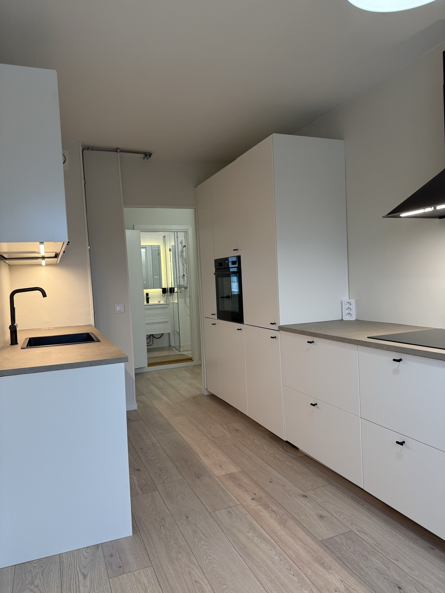
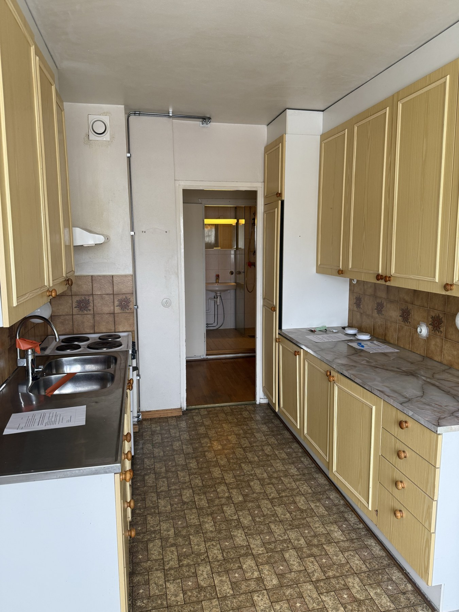
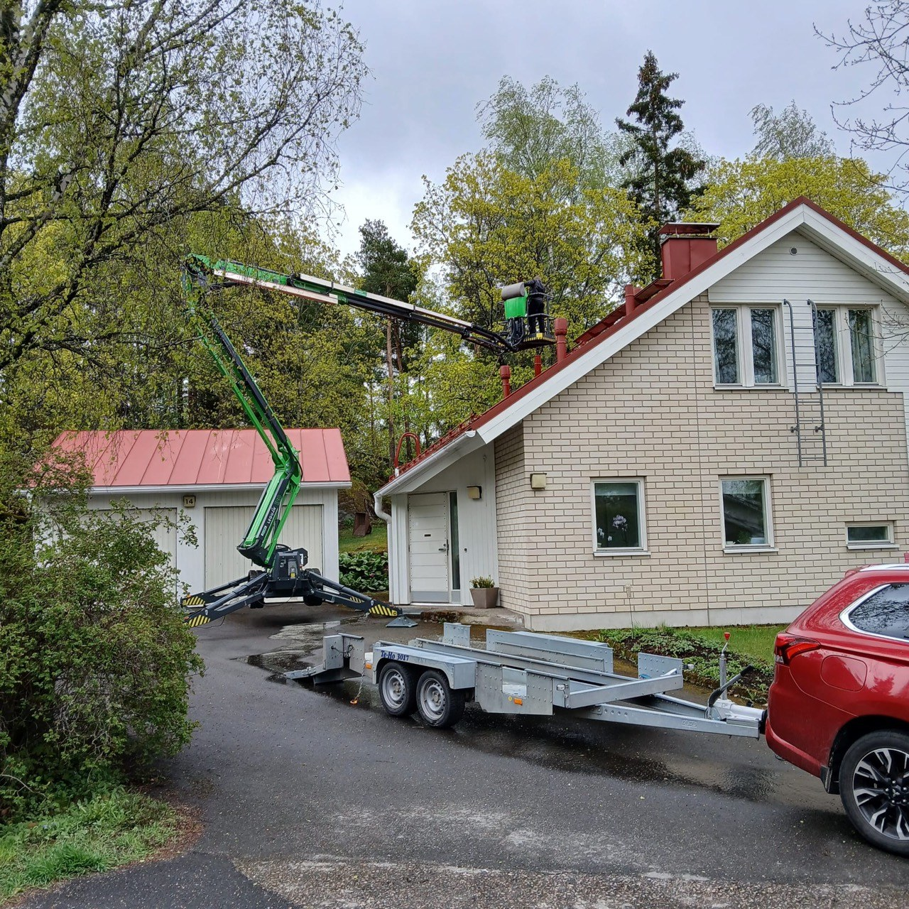
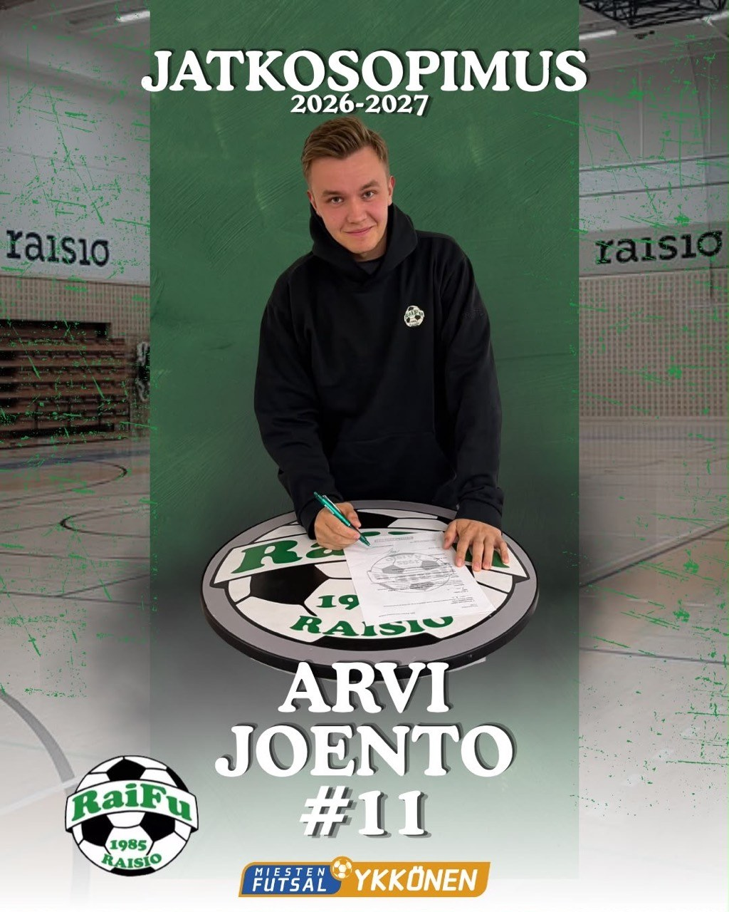

Myynti ja asiakastyö
Myyntiopintoja sekä käytännön kokemusta asiakashankinnasta, tarjouksista ja asiakassuhteista.
PORTFOLIO / TURUN SEUTU
Opiskelija. Yrittäjä. Joukkuepelaaja.
Opiskelen tuotantotaloutta ja teen töitä yrittäjänä. Tässä portfoliossa näet, mitä teen opinnoissa, asiakaskohteissa ja kentällä.
Avoin työ- ja harjoittelumahdollisuuksille
01 / KOULU
Turun ammattikorkeakoulu · Insinööri (AMK) · 2. opiskeluvuosi
Opinnoissani painottuu myynti. Yhdistän koulussa oppimaani yrittäjänä saatuun kokemukseen asiakkaista ja projektien toteutuksesta.
LinkedIn-profiilini ↗Myyntiopintoja sekä käytännön kokemusta asiakashankinnasta, tarjouksista ja asiakassuhteista.
Power BI:n käytön harjoittelua ja toimitusketjujen tiedonkulun tarkastelua.
Since AI -hackathonissa harjoittelen tekoälyn avulla kehittämistä ja GitHub-työskentelyä tiimissä.
GitHub ↗02 / YRITTÄMINEN
Winfi Oy & Pihahuolto Joento
WINFI OY
Olin mukana huoneistoprojektissa hankinnasta remontin toteutukseen. Keittiön muutos näyttää yhden osan lopputuloksesta.
↔ Vedä kuvan jakajaa ja vertaa muutosta.


EnnenJälkeen
PIHAHUOLTO JOENTO / TOIMINIMI
Piha- ja huoltotöitä: kattojen ja rännien pesua, pensasaitojen leikkausta sekä muita ulkotöitä.
03 / FUTSAL
RaiFu · Miesten edustusjoukkue · #11
Pelaan futsalia RaiFun miesten edustusjoukkueessa. Yrittämisen ja opintojen rinnalla arkeeni kuuluu joukkueurheilu.
Kausi 2026–2027
Tutustu joukkueen Instagramiin ↗Pelaajatilastoni Palloliiton tulospalvelussa ↗
SEURAAVA ASKEL
Etsin työ- tai harjoittelupaikkaa myynnin,
liiketoiminnan kehittämisen tai tuotantotalouden parista.